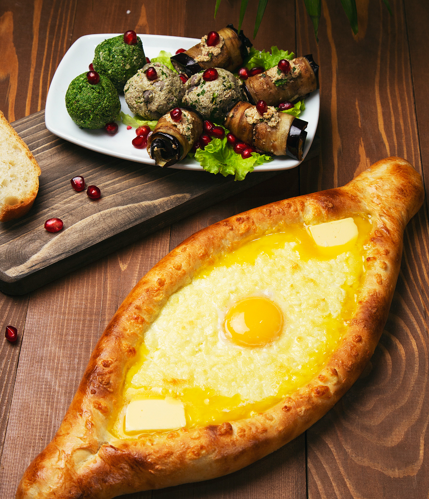
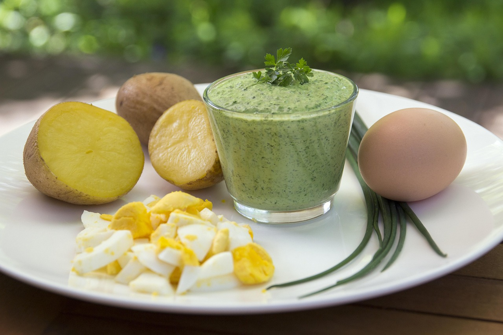

Lust auf was Neues?

Georgischer Khachapuri

Frankfurter Grüne Soße


In fast jeder Küche ist sie zu finden: die Pfanne. Sie eignet sich
perfekt zum Braten von Fleisch, Fisch, Gemüse, Steaks, Omeletts oder
Pancakes. Ihre flache Bodenfläche sorgt für gleichmäßige
Hitzeverteilung und eine knusprige Kruste. Für den täglichen
Gebrauch ist sie besonders praktisch und deckt viele Kochbedürfnisse
ab.
Der Wok überzeugt mit seiner gewölbten Form und den hohen Seiten.
Ideal für das schnelle Garen bei hoher Temperatur („Stir-Frying“),
bleiben Zutaten knackig und saftig. Wer gerne asiatisch oder gesund
kocht, wird die Vorteile des Woks schätzen. Letztlich hängt die Wahl
vom persönlichen Kochstil ab.